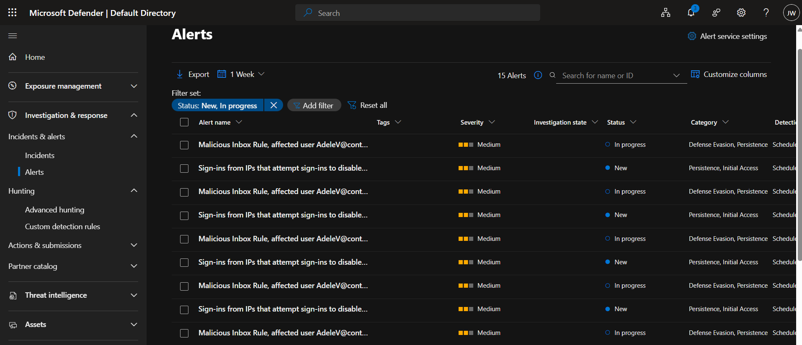
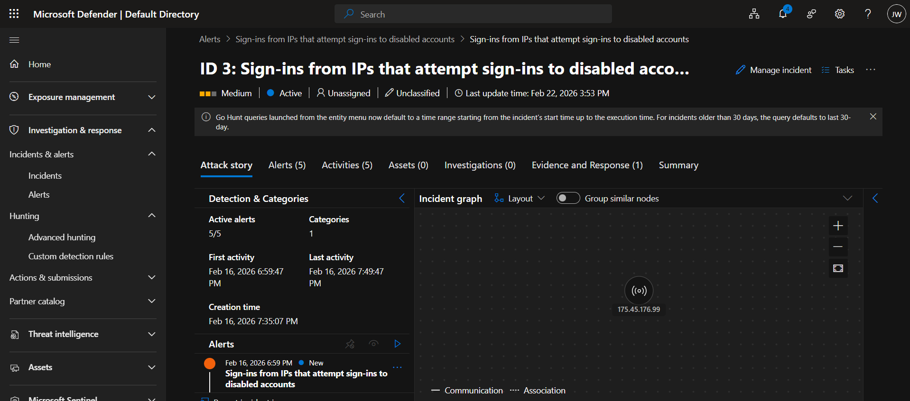
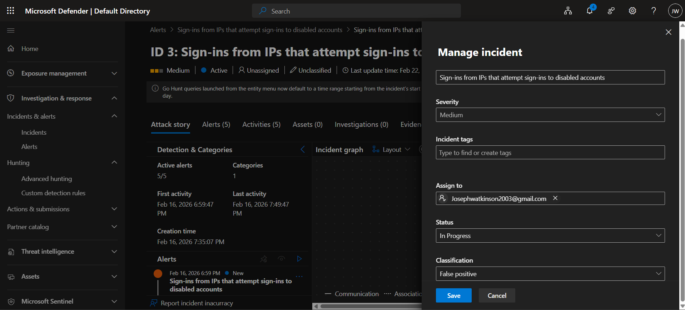
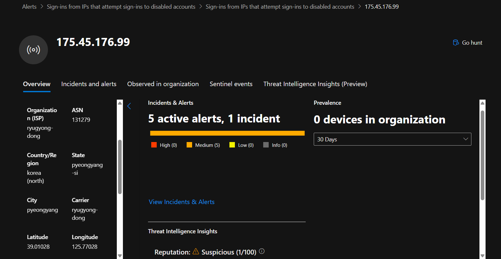

Demonstrate investigation and triage of a Microsoft Defender alert identifying repeated sign-in attempts from a suspicious external IP address targeting disabled accounts. The goal was to determine whether the activity represented malicious user activity (Initial Access / brute-force probing) or a benign authentication misconfiguration.
Environment & Threat Model
Platform: Microsoft Defender XDR / Microsoft Sentinel (Azure tenant lab environment).
Detection source: Built-in analytics rule "Sign-ins from IPs that attempt sign-ins to disabled accounts".
Alert severity: Medium (mapped to Initial Access / Persistence categories).
Observed behaviour: External IP generated multiple authentication attempts against disabled Azure AD accounts.
Error code observed: 50057 (User account is disabled).
Entity investigation performed on source IP address (ASN, geolocation, reputation score, correlated alerts).
Threat model assumption: activity may represent credential stuffing, brute-force enumeration, or reconnaissance of valid account names from hostile infrastructure.
Methodology & Investigation Process
Alert identified within the Microsoft Defender SOC queue and opened for triage.
Status set to In Progress and assigned to analyst to simulate Tier 1 ownership workflow.
Reviewed alert metadata, severity, rule description, and associated incident timeline.
Examined Attack Story and Incident Graph to understand entity relationships.
Pivoted to the related entity: source IP address.
Analysed IP enrichment data including ASN, geolocation, reputation score, and correlated alerts.
Assessed behavioural pattern for indicators of credential stuffing, brute-force enumeration, or reconnaissance activity.
Documented findings and applied final classification within the incident record.
Traffic was captured with tcpdump and saved as a .pcap. In
Wireshark, HTTP filters confirmed TLS 1.2 with RSA.

Figure 1: TLS 1.2 handshake confirmed in Wireshark through a "Server Hello" packet.

Figure 2: Encrypted POST packet found using HTTP filter.
The webserver’s private key was then imported into Wireshark and applied
to the encrypted POST packet.

Figure 3: The server’s private key was imported into Wireshark.
Results
Importing the server’s private key into Wireshark enabled decryption of
the POST packet. Subsequently, the HTTP POST request, including plaintext
username and password, was successfully recovered.

Figure 4: Decrypted POST request showing recovered login credentials.
Analysis
Risk: RSA key exchange allows an attacker with the private key to retroactively decrypt all previously recorded sessions.
Limitations: This scenario is relevant only where RSA cipher suites are enabled. Most modern servers use ECDHE/DHE with forward secrecy.
Learning outcome: Configuring a lab, capturing and analyzing encrypted traffic, and applying cryptographic knowledge in practice.
Defensive Relevance
Disable RSA-based cipher suites and enforce forward-secret ciphers such as ECDHE.
Audit TLS configurations to ensure strong ciphers are enforced.
Recognize that if a private key leaks, all previously captured traffic is compromised.
Ethical Context
This exercise was conducted entirely in a self-controlled lab environment
for educational purposes. No external systems were targeted.